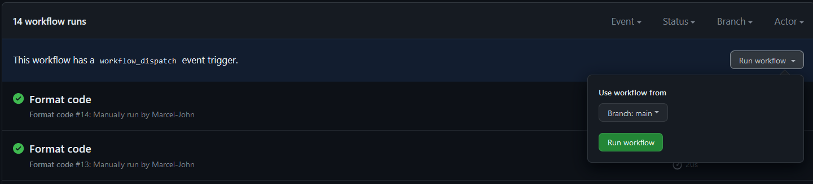

Sprint 2
Task 1 (Tom,Marcel,Nico)
We drafted a Mock Up of the Basic UI of the game.
The arena will consist of diffferent types of terrain each with it's unique effect on the robot.
For example, fire will damage the robots, water will slow them down.
We plan to add different boosters like health package or double damage rune which the players can collect during a match.
Our robots will be fighting in real-time utilizing different weapons/abilities which can be selected before playing.
Roboarena will support both a solo and a multiplayer mode, the multiplayer mode is planned to be local only for now.
In addition to each player the arena will be populated by different AI-driven robots the players will have to compete with.


Task 2 (Nico)

Arena:
- 2 dimensional Array, size 100 * 100 to store all tiles
- The arena is drawn based on a textfile.
- We iterate through every letter in the textfile.
- Based on the letter different drawings happen in the arena and we set the element in the array to the appropriate terrain.
- At first the arena wasnt drawn correctly because line breaks were included in the array.
- We want to improve the map editor in the future so that the process of creating an arena is more convenient.
Difficulty:
We initially had a version where we initialised the screen first and then called a draw function to color the tiles.
To our surprise, this version didnt draw anything on the screen.
The solution was to implement a event-function which is executed
automatically, when the screen is initialised.
- An empty list, called list_with_tiles is initialized.
- The respective txt-file is loaded, in this case testarena.txt.
- All spaces and newlines are replaced with the content.replace() function.
- Afterwards all letters are saved in the array.
Task 3
We made a simple Robot class to encode the robots. Each robot has following attributes:
position, radius, direction, color and movement speed.
In the arena class the robots are represented by an Array of BasicRobots.
Whenever we redraw the arena each Robot in the array is drawn as a circle with its specified Radius and color at its position. We indicate each robots "forward direction" with a line.
A robot in black drawn on the arena:
Task 4 (Marcel)
The move function uses the direction and speed to calculate the velocity using cos and sine to walk in every direction.
Since we use sin and cos we need to typecast to int.
The Timer is from PyQt5 it is initialised as shown in task 2.
To move we call an update Function which calls the move Function to "move" the Robot.
A short video, showcasing the movement of the robot in an example arena
Your browser does not support the video tag.
new Github Actions
Added manuall Trigger for Flake8 test.
Added Formater on manuall Trigger.
Code:
Button to perform the action:

Conclusion
We are satisfied with how the sprint went out. The programming part went relatively smooth, we have completed all tasks and
hit our set goals.